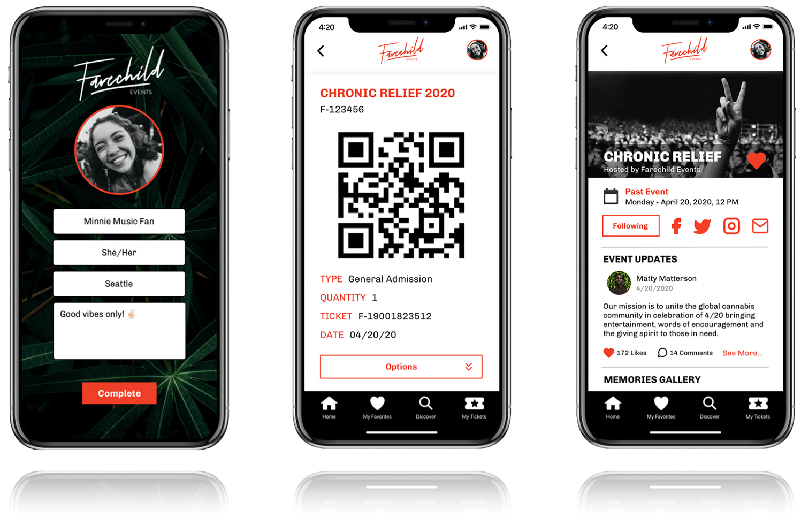
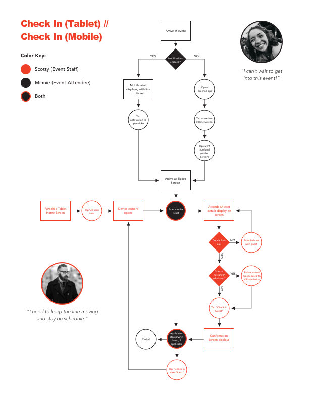
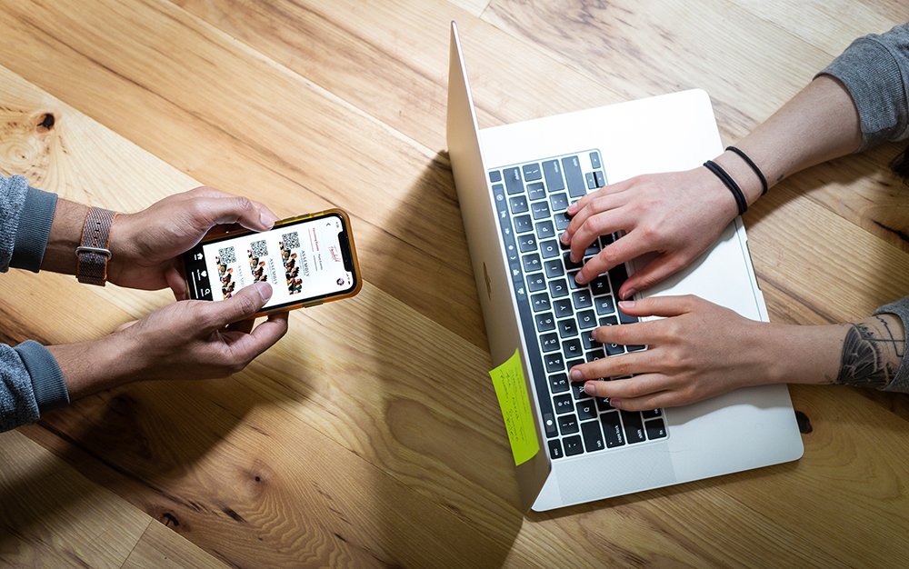
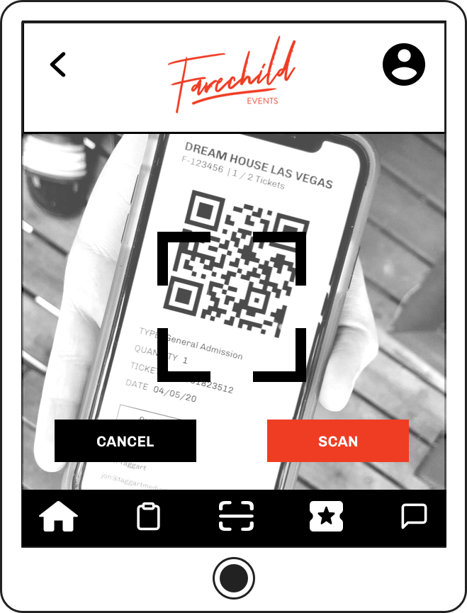
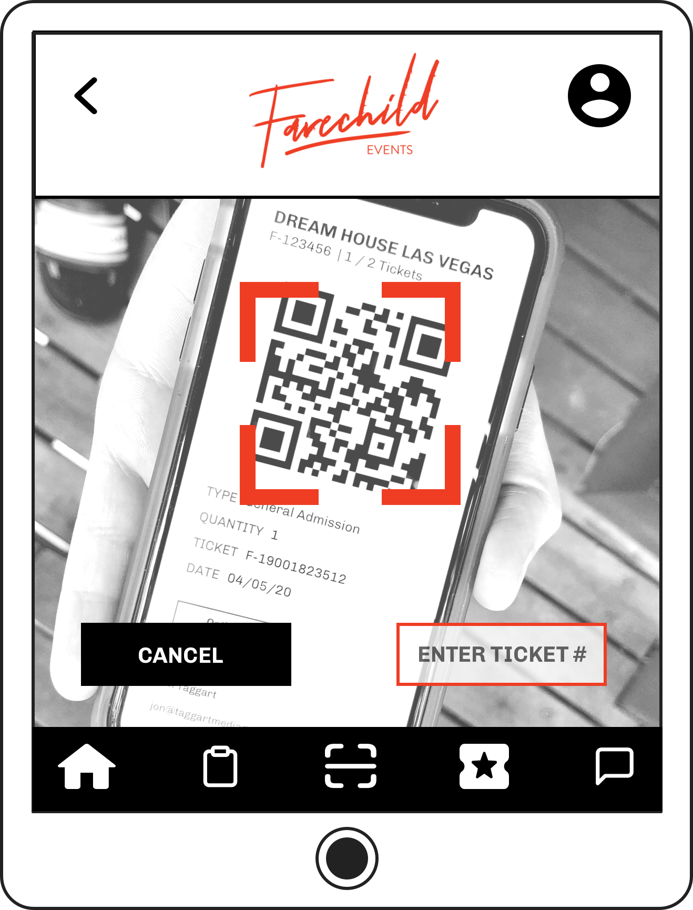
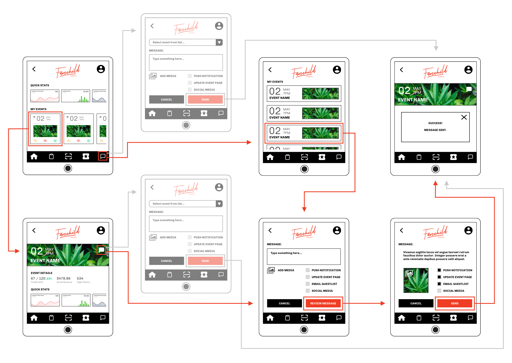
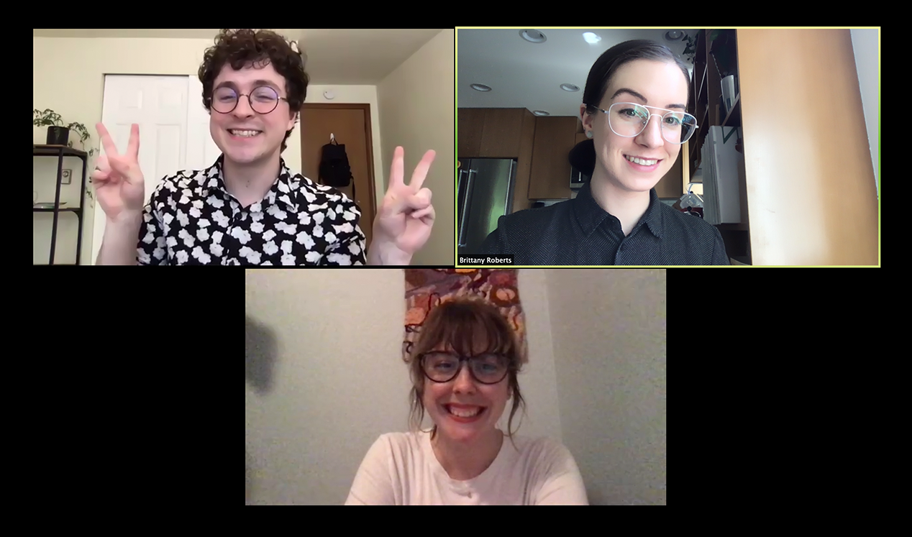

About the Client
Farechild is an offbeat event production company based in Seattle WA.
Spotting a gap in the market, Farechild's founders decided to launch their own mobile ticketing platform to support creators of cannabis friendly events.
They enlisted my student team at General Assembly for a ~2 week sprint to jumpstart their native app design.
This is a...
Native App Concept
Timeframe
16 Days
My Role
UX Research, Interaction Design
My Team
Max Davis
Alyssa Poulsen
Spoiler alert: My team delivered two interactive prototypes to the client. A mobile app for attendees to discover events/purchase tickets — and a tablet app for organizers to manage multiple events, communicate with guests, and check-in ticket holders at the door. (click play to view)
Mobile Ticketing — Without the Red Tape
Farechild is developing an app to meet the growing need for 420-friendly event management in the United States. Most mainstream ticketing apps prohibit transactions for "restricted goods" (including recreational cannabis) in their terms of service. On these platforms — even in states where weed is legal, organizers can't charge admission for events where it will be consumed.

Farechild is a platform for free thinkers
High Level Goals
- Design and test a core feature set for ticketing and event management.
- Research and pitch next steps for Farechild to develop a "sticky" product and encourage community building on their platform.
Questions & Challenges
- One app, or two? How might we best meet the needs of two user groups on opposite sides of the ticket transaction?
- Leverage device hardware. How might we utilize cameras, location services, and push notifications?
We are not...
- Reinventing the wheel Rather, our clients encouraged us to study their competitors for basic functionality, and improve the UX from there.
- Designing a payment flow Our clients are still working out the logistics of credit card processing for cannabis friendly events.
One App, or Two?
Farechild tasked my team with exploring the potential for overlap between two target customers: event producers and event attendees. Is the best solution two discrete apps for event management and event attendance? Or one app with a hybrid dashboard for producers (who also sometimes attend events)? My team conducted exploratory research with both customer types, and weighed the pros/cons of bundling utilities for producers into a single app.
Survey the Crowd
My teammate Max crafted a 10 questions to be answered by 25 survey participants, who'd attended live events in the past year. The survey established a couple of baselines: What constitutes a good time vs. a bad time? How do attendees leverage technology?
The folks at Farechild helped connect us with professionals from the events/entertainment industry. My teammate Alyssa and I conducted 3 interviews with event producers to guage preferences and uncover problems with existing event tech.
Attendees Want...
- To know what to expect: Feelings of confusion/delay were the most memorable pain points for survey respondents. Bottlenecks at the door, oversold seating sections, and interminable wait times tarnished their experience of the event.
- Periodic updates: Regular updates preceding an event was of high importance to survey respondents. 60% reported that the app/website they booked through is first place they'd check for updates. 30% would check their email first.
Producers Need...
- Targeted communication: Event producers rely on multiple channels to connect with their guests (email newsletters, texts, social media). Personalized communication grows their audience and establishes brand credibility.
- Organizational tools: All three producers emphasized the importance of tools like calendars, list builders, and note keeping systems. Device wise, all three producers prefer tablet screens over smartphones for running events.
- Community: In the events/entertainment industry, personal connections are everything. Cultivating a network and learning their guests' preferences is good for business.


Can Confirm — Separate Apps Have Technical Advantages
Our interviews uncovered zero demand for a blended attendance/management experience. We learned that producers rarely need to purchase tickets for themselves, often attending events for free thanks to network connections.
From a technical perspective — I researched rideshare companies and Farechild's direct competitor, Eventbrite, to better understand why two apps might be the best course. (Lyft noteably started out as a hybrid driver/passenger app before splitting it in 2017.)
Two Apps are...
- Smaller: Unused features waste valuable storage space on mobile devices. Bundling producer-level functionality into the app would needlessly impact performance for Farechild's largest customer base: event attendees.
- Faster: Standalone apps will allow Farechild to develop and release new features for both user groups at a faster pace.

Uber

Uber Driver

Lyft

Lyft Driver
Eventbrite
Eventbrite Organizer
Making it Stick (a.k.a Problem-Solution Fit)
Our clients challenged us to leverage device hardware — particularly notifications — to devise unique/interactive features and increase the app's "stickiness." A native app presents lots of opportunities to prolong engagement, but only if it provides value to attendees beyond quick ticket transactions and check-ins.
Novelty ≠ Stickiness
My team brainstormed several highflown features together, but none of them addressed real problems from our reaserch. Circling back to our personas Minnie and Coco, I observed complementary needs to inform and to be informed.
Event goers are reassured/engaged when they can easily access up-to-date information from a single source — Minnie will go where the information is. Coco needs a place to publish updates, promote new events, and connect with her guests in a personalized way.
Farechild can encourage attendees to stick around on their platform between ticket transactions by providing a live information hub. Meanwhile, they'll support producers by providing a one-stop communication tool for pushing updates to guestlists.

Nobody asked for jukeboxes or jumbotrons... and survey fatigue is real y'all
Notifications as Crowd Control
In addition to pre-event reminders, organizers can use app notifications to broadcast updates to guests in real time. This feature could be a lifesaver for handling unforseen venue changes (a blocked exit, out-of-order restroom, food shortage, etc).

Oh Sh*t! We Forgot Scotty
While drafting the ticket check-in flow, I realized we were missing a third prospective user — event staff. This revelation came later in the sprint than I would've liked, but I squeezed in one conversation with a volunteer who had worked in admissions for several film festivals. Based on their insights, I created a proto-persona named Scotty to represent event staff.
Scotty's Goals
- Prevent Bottlenecks: In order to keep the line moving, Scotty needs a check-in flow with as few steps as possible and zero lag time.
- Resolve Conflict: Booking mistakes happen. Scotty needs easy access to guestlists and receipts in order to quickly and courteously diffuse disputes at the door.



Game Plan for Testing the MVP(s)
My team conducted a mix of remote and in-person moderated usability tests with our two prototypes. Recruiting testers from the events/entertainment industry was a real challenge, so we were fortunate to have the same volunteer who inspired Scotty as a tablet tester for round two.
Client Goals
- Intuitive Navigation: Users are able to orient themselves within the app and complete routine tasks with no errors. We tracked the number of detours/missteps our testers made during routine tasks for each iteration.
- Minimal Friction: Users are able to perform routine tasks quickly and confidently. We measured the amount of time users took to successfully complete routine tasks for each iteration.
- Look and Feel: Users are delighted by the app's features and unique branding. This metric is hard to quantify, so I chose to conduct a SUS survey during the last round of mobile testing to get some numbers on it for our clients.
Hidden Potential — The Digital Ticket Stub
During attendee-side mobile tests, we observed a pattern of users bypassing the global navigation to hunt for clues on their ticket stubs. When prompted to check for updates or contact customer support, testers went first to purchased tickets — expecting to find links there.
My team was ✨ excited ✨ to unlock an existing mental model — which led us to improve the prototype's IA by adding secondary navigation elements to all ticket screens, resulting in higher task completion rates and a respectable SUS score of 85.5 for the prototype.


Check (and Prevent) Human Error at the Door
During the last round of producer-side tablet testing, users completed all tasks swiftly and successfully. However — "Scotty" clocked several design pitfalls, which helped us compile a to-do list for future iterations:
Check In a Guest
- Eighty-six the "scan" button. Manual QR capture is technically unecessary and introduces the potential for premature/unsuccessful scans — allow the app to confirm ticket scans automatically for greater accuracy.
- Technology fails. Give users the option to manually type ticket numbers in case the device camera isn't working.


Broadcast an Update
- Eighty-six the dropdown menu. Provide event-specific thumbnails on the global update screen instead. Choosing from a group of images is faster/more accurate for users who are working multiple events through the app.
- Catch typos. Add a review screen in the messaging flow to help users proofread before they hit publish.
- Email receipts. Add an email option for pre-event updates. If guests don't have notifications enabled, they'll likely miss the memo!


Nothing but love for Team Farechild
Closing Thoughts
This project took place in May of 2020. At the time, we were just beginning to understand that it would be a financially devastating year for the entertainment industry. We did our best to proceed with empathy toward our clients and the event producers who agreed to interviews.
I'm extremely grateful for my hardworking team, our rad clients, and our generous volunteers during this uncertain time.
Next Steps & Lessons Learned
The sticky hypothesis — that providing a live information hub will prolong attendee engagement between ticket transactions — is impossible to test without real usage analytics. We'd also need to establish a shared definition of 'prolonged,' and decide what types of engagement to count.
For instance, since event discovery is a core feature — should we count searching and favoriting as proof of prolonged activity? Or only visits to the newsfeed and expired event pages? Once parameters are set, Farechild can collect meaningful metrics — number of page visits, time spent on pages, number of likes/comments on producer generated content, etc.
TL;DR — Define the measuring stick for "stickiness"
Dealing in hypotheticals limited the scope of our research/discovery for this project. In a normal year, we could have studied people's actual behavior by attending/observing live events, this year we relied on self-reporting.
In terms of usability, remote tests worked fine for validating basic app navigation. However, we had no way to test interactions between devices running interdependent prototypes. Next steps (especially for the producer-side tablet app) would be on-site observation — ideally shadowing event staff during the admissions process.
TL;DR — Test overlapping user flows with interdependent prototypes IRL
Next time, question assumptions! Farechild recruited my team to design a feature set for their native app(s) after they'd already built most of their browser-based ticketing platform. This gave us a head start in some areas (visual design, branding), but it also caused us to frame our research around known customers of the web service.
Minnie can book tickets from her laptop, and Coco can manage events online, but Scotty has little use for a web app — he's only a core user on event days. If we had spent a little time storyboarding/writing scenarios before moving forward with the customer profiles our client supplied, we would've accounted for event staff at the beginning of the design process.
TL;DR — Don't skip scenarios, account for secondary personas early